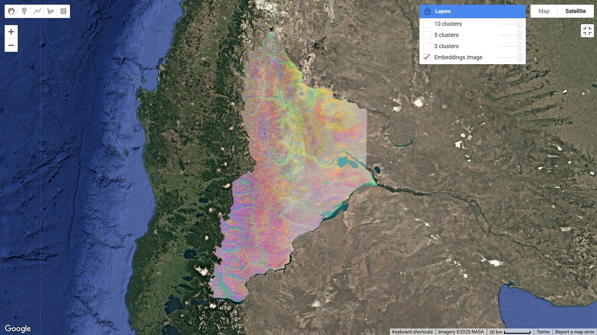
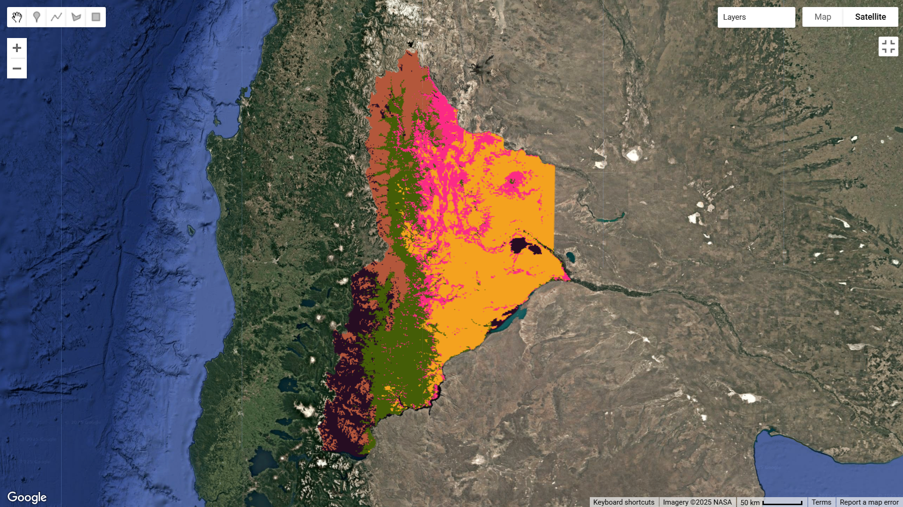
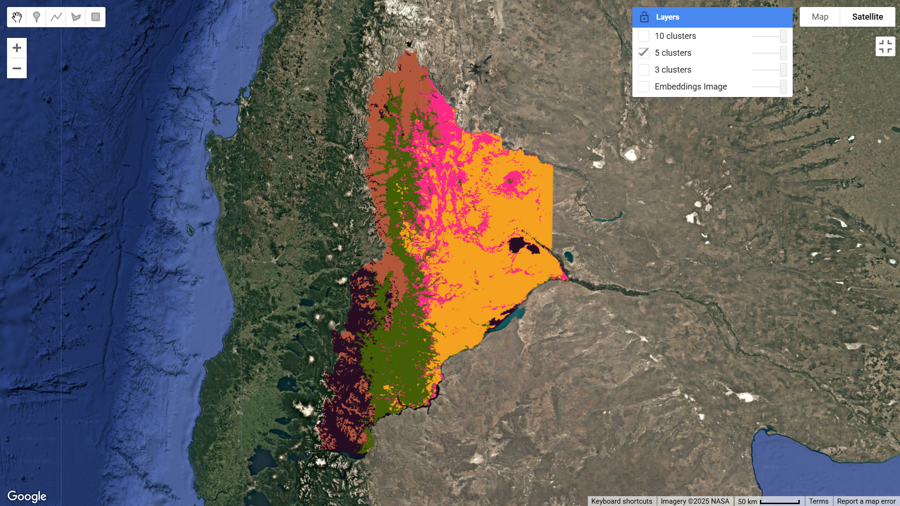
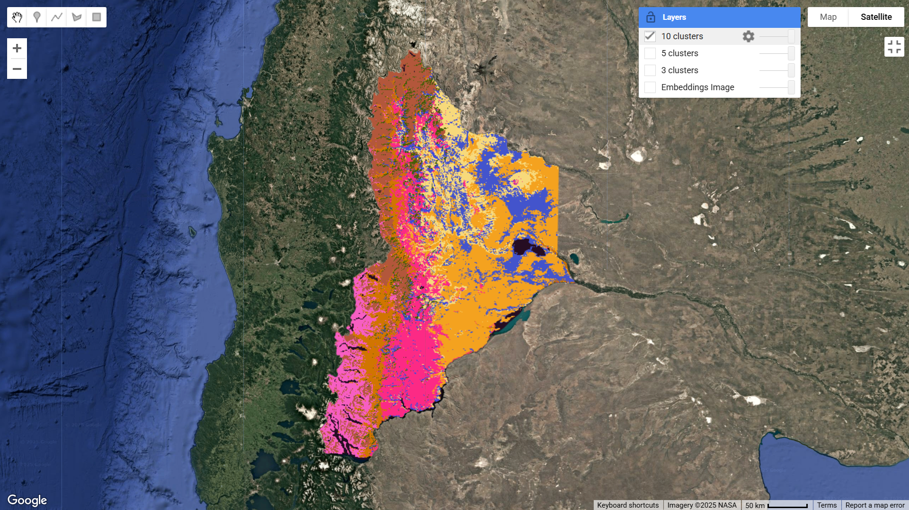

4. Entrenamiento no supervisado#
En este capítulo aplicaremos un algoritmo de clustering no supervisado (basado en el algoritmo K-means) modificando ligeramente el código de un tutorial de GEE.
Un algoritmo de aprendizaje no supervisado no necesita datos de entrenamiento ni etiquetas conocidas: el algoritmo agrupa los píxeles en k clústeres según su similitud en el espacio de variables.
El siguiente código combina el nuevo dataset de Satellite Embeddings de Google Research (2024) con técnicas de aprendizaje no supervisado (K-Means) para descubrir patrones espaciales a partir de representaciones semánticas del territorio — justamente en la línea de la GeoIA y la geosemántica estadística-.
El script se puede encontrar en el repositorio del GTT-CDG y se denomina: EmbeddingsClusterProvincia.
Este código:
Carga embeddings satelitales anuales (2024).
Filtra y visualiza la provincia de Neuquén.
Muestrea los vectores de embeddings.
Aplica clustering K-Means no supervisado.
Visualiza distintas segmentaciones (3, 5, 10 grupos).
4.1. El algoritmo de clustering (entrenamiento no supervisado)#
4.1.1. Acceso al dataset de Satellite Embeddings#
Este ImageCollection contiene vectores de representación (embeddings) generados por un modelo fundacional [] entrenado con millones de imágenes satelitales globales.
Cada píxel tiene un vector de 64 dimensiones (A01, A02, … A256) que resume de forma semántica la apariencia y el contexto del territorio (no solo NDVI, sino también textura, morfología, patrones urbanos, etc.).
“ANNUAL” indica que el dataset representa una media anual del embedding por píxel.
// Tutorial: Introduction to the Satellite Embedding Dataset
// *********************************************************
// Access the Satellite Embedding Dataset
// *********************************************************
var embeddings = ee.ImageCollection('GOOGLE/SATELLITE_EMBEDDING/V1/ANNUAL');
4.1.2. Definición de la región de estudio (ROI)#
Se utiliza la capa GAUL (FAO) [] de divisiones administrativas nivel 1 para seleccionar la provincia de Neuquén.
Este geometry será el área de estudio para filtrar el embedding y extraer muestras.
// Select a region
// ****************************************************
// Definir roi (region de interés o estudio): Podes cambiar el nombre de provincia
var geometry = ee.FeatureCollection("FAO/GAUL/2015/level1")
.filter(ee.Filter.eq('ADM0_NAME', 'Argentina'))
.filter(ee.Filter.inList('ADM1_NAME', ['Neuquen']));
Configura el mapa en vista satelital y centra el zoom sobre la provincia.
// Use the satellite basemap
Map.setOptions('SATELLITE');
Map.centerObject(geometry, 12);
4.1.3. Filtrado temporal y espacial del embedding#
Se selecciona el embedding correspondiente al año 2024 dentro del área de Neuquén.
.mosaic() combina posibles tiles superpuestos en una sola imagen continua.
El resultado (embeddingsImage) es una imagen multibanda con los vectores del modelo para cada píxel de Neuquén.
// Prepare the Satellite Embedding dataset
// ****************************************************
var year = 2024;
var startDate = ee.Date.fromYMD(year, 1, 1);
var endDate = startDate.advance(1, 'year');
var filteredEmbeddings = embeddings
.filter(ee.Filter.date(startDate, endDate))
.filter(ee.Filter.bounds(geometry));
var embeddingsImage = filteredEmbeddings.mosaic();
print('Satellite Embeddings Image', embeddingsImage);
4.1.4. Visualización RGB de componentes del embedding#
Dado que el embedding tiene muchas bandas, se eligen tres (A01, A16 y A09) para mostrarlas como un RGB sintético. Sin embargo, es posible elegir cualquier otra combinación de tres bandas (son 64 en total). Se denomina sintético porque estas bandas no corresponden a los canales ópticos reales de una imagen satelital (como rojo, verde o azul), sino a componentes abstractas del espacio de representación aprendidas por el modelo, que sintetizan información espectral, espacial y contextual del territorio.
Esto genera una visualización pseudo-color donde los tonos representan variaciones semánticas del territorio (urbano, vegetación, agua, etc.) detectadas por el modelo.
// Visualize the Satellite Embedding Dataset
// *********************************************************
// Visualize three axes of the embedding space as an RGB.
var visParams = {min: -0.3, max: 0.3, bands: ['A01', 'A16', 'A09']};
Map.addLayer(embeddingsImage.clip(geometry), visParams, 'Embeddings Image');
// Make the training dataset for unsupervised clustering
{kind=link}

Fig. 4.1 RGB sintético de un subconjunto del campo de Embedding#
4.1.5. Muestreo y clustering no supervisado (K-Means)#
4.1.5.1. a) Muestreo de píxeles#
Se extraen 1000 píxeles aleatorios del área de Neuquén a 10 m de resolución.
Cada muestra contiene 64 variables (los valores de las bandas A00–A63).
var nSamples = 1000;
var training = embeddingsImage.sample({
region: geometry,
scale: 10,
numPixels: nSamples,
seed: 100
});
print(training.first());
💡 ¿Por qué se toman muestras aleatorias en un entrenamiento no supervisado?
En un clustering no supervisado no se necesitan etiquetas, sino muestras representativas del territorio.
El muestreo aleatorio reduce la cantidad de píxeles procesados sin perder la diversidad espectral y semántica del área de estudio.
Aplicar K-Means sobre toda la imagen sería computacionalmente costoso e innecesario, ya que muchos píxeles vecinos comparten valores muy similares.
Con una muestra bien distribuida, el algoritmo puede estimar centroides robustos y luego asignar cada píxel de la imagen completa al clúster más cercano.
4.1.5.2. b) Definición de la función getClusters()#
Define una función que:
Entrena un modelo K-Means no supervisado con el número de grupos deseado (‘nClusters’).
Aplica el modelo al embedding completo (‘embeddingsImage’) para clasificar todos los píxeles en esos grupos.
// Function to train a model for desired number of clusters
var getClusters = function(nClusters) {
var clusterer = ee.Clusterer.wekaKMeans({nClusters: nClusters})
.train(training);
// Cluster the image
var clustered = embeddingsImage.cluster(clusterer);
return clustered;
};
4.1.6. Generación de distintas segmentaciones#
Se prueban tres segmentaciones con distinto número de clústeres (3, 5, 10).
.randomVisualizer() asigna colores aleatorios para distinguir los grupos.
En el mapa podés observar cómo los embeddings agrupan áreas similares según sus características espectrales y contextuales aprendidas por el modelo.
Resultado del clustering no supervisado sobre el Satellite Embedding (2024) utilizando el algoritmo K-Means con k = 3. Cada color representa un grupo de píxeles con similitud semántica dentro del espacio de representación del modelo. Se trata de una segmentación sintética, ya que los clústeres se derivan de variables latentes aprendidas por el modelo fundacional, y no de bandas ópticas o índices espectrales reales.
var cluster3 = getClusters(3);
Map.addLayer(cluster3.randomVisualizer().clip(geometry), {}, ' 3 clusters');
{kind=link}

Fig. 4.2 Clustering no supervisado (K-Means, k = 3) aplicado al Satellite Embedding 2024 en Neuquén.#
var cluster5 = getClusters(5);
Map.addLayer(cluster5.randomVisualizer().clip(geometry), {}, ' 5 clusters');
{kind=link}

Fig. 4.3 Clustering no supervisado (K-Means, k = 5) aplicado al Satellite Embedding 2024 en Neuquén.#
var cluster10 = getClusters(10);
Map.addLayer(cluster10.randomVisualizer().clip(geometry), {}, ' 10 clusters');
{kind=link}

Fig. 4.4 Clustering no supervisado (K-Means, k = 10) aplicado al Satellite Embedding 2024 en Neuquén.#
¿Te interesa hacer un clustering para otras provincias?
El siguiente script te permite listar los nombres de las provincias según la base de FAO [], simplemente modificá el nombre de la provincia y volvé a ejecutar el código.
// Colección GAUL nivel 1 (provincias)
var provinces = ee.FeatureCollection("FAO/GAUL/2015/level1")
.filter(ee.Filter.eq('ADM0_NAME', 'Argentina'));
// Extraer los nombres únicos de las provincias
var provinceNames = provinces.aggregate_array('ADM1_NAME').distinct();
// Mostrar en la consola
print('Provincias de Argentina:', provinceNames);
¿Te interesa hacer un clustering por Departamento de una provincia?
El script EmbeddingsClusterDepartamento te permite analizar el clustering por departamentos de la base FAO [].
El siguiente fragmento define la región de interés (ROI) correspondiente al Departamento Confluencia de la provincia de Neuquén.
var geometry = ee.FeatureCollection("FAO/GAUL/2015/level2")
.filter(ee.Filter.eq('ADM0_NAME', 'Argentina'))
.filter(ee.Filter.eq('ADM1_NAME', 'Neuquen'))
.filter(ee.Filter.eq('ADM2_NAME', 'Confluencia'));
4.2. Propuesta metodológica: Representación del pipeline algorítmico#
En el campo de la Observación de la Tierra (EO), representar formalmente el flujo algorítmico mediante pipelines matemáticos permite articular la lógica computacional con el razonamiento analítico.
Este tipo de esquemas no solo sintetiza la secuencia de operaciones del algoritmo, sino que también explicita las dependencias entre variables, los objetos intermedios del proceso (\(\mathbf{X}_t\), \(\tilde{\mathbf{X}}_t\), \(\mathcal{D}\), \(\mathcal{C}\)), y la estructura conceptual que subyace al aprendizaje no supervisado.
Desde una perspectiva metodológica, esta representación fomenta una comprensión abstracta y reproducible del procedimiento: facilita la trazabilidad, el análisis comparativo entre enfoques y la integración de distintas fuentes o niveles de representación.
En última instancia, el pipeline actúa como un puente entre el pensamiento matemático y el pensamiento algorítmico, contribuyendo a formalizar las etapas del análisis geosemántico y a consolidar un lenguaje común entre la ciencia de datos geoespaciales y la geoAI.
4.2.1. Esquema/Pipeline del Algoritmo#
Donde:
Símbolo |
Significado en el pipeline |
|---|---|
\(ROI\) |
Región de interés: la geometría espacial filtrada por provincia o departamento (variable |
\(t\) |
Año seleccionado del embedding satelital (por ejemplo, |
\(k\) |
Número de clústeres definidos para el algoritmo K-Means ( |
\(n_{\mathrm{samples}}\) |
Cantidad de muestras aleatorias extraídas para entrenar el modelo ( |
y \(\mathbf{X}_t\) y \(\tilde{\mathbf{X}}_t\) significan:
Símbolo |
Significado |
|---|---|
\(\mathbf{X}_t\) |
Embedding satelital anual filtrado por tiempo (t) y región ROI. |
\(\tilde{\mathbf{X}}_t\) |
Mosaico del embedding anual en la ROI, usado para muestreo y clustering. |
y donde \(\mathcal{D}\) y de \(\mathcal{C}\) significan:
Símbolo |
Significado |
|---|---|
\(\mathcal{D}\) |
Conjunto de datos de entrenamiento obtenido por muestreo aleatorio de píxeles del mosaico \(\tilde{\mathbf{X}}_t\). Contiene los vectores de embedding usados para ajustar el modelo de clustering. |
\(\mathcal{C}\) |
Modelo de clustering no supervisado (K-Means) entrenado sobre \(\mathcal{D}\), que define los centroides y asignaciones de cada grupo en el espacio semántico. |
4.3. Cierre#
El algoritmo mostrado en este capítulo, en esencia, una demostración de análisis geosemántico estadístico, donde el modelo fundacional ya “comprende” el territorio y el clustering revela su estructura interna sin etiquetas humanas. A su vez, la representación formal del pipeline subyacente aporta un componente metodológico clave: permite visualizar y modelar la secuencia lógica del algoritmo, conectar sus etapas con los objetos matemáticos intermedios y establecer un marco reproducible que fortalece la comprensión conceptual del proceso de aprendizaje no supervisado en Observación de la Tierra (EO).